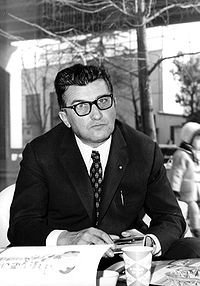

Sobre nos
A história da Lamborghini é fascinante e começa com seu fundador, Ferruccio Lamborghini, um empresário italiano nascido em 1916. Antes de entrar no mundo dos carros esportivos, Lamborghini era conhecido por sua habilidade como mecânico e sua paixão por carros. Ele construiu sua fortuna inicialmente fabricando tratores após a Segunda Guerra Mundial.
A virada para os carros esportivos ocorreu na década de 1960, quando Lamborghini, insatisfeito com a embreagem de um de seus carros esportivos de alto desempenho, um Ferrari, decidiu abordar Enzo Ferrari com sugestões de melhorias. Diz a lenda que Enzo rejeitou as sugestões de Lamborghini, alegando que ele deveria se concentrar na construção de tratores e deixar os carros esportivos para quem sabia sobre eles.
Essa resposta impulsionou Lamborghini a iniciar sua própria empresa de carros esportivos, a Automobili Lamborghini, fundada em 1963 em Sant'Agata Bolognese, na Itália. O primeiro carro produzido foi o Lamborghini 350 GT, um cupê de luxo com um motor V12 de 3.5 litros.
O Lamborghini Miura, lançado em 1966, foi um marco na história da marca. Ele estabeleceu novos padrões de design e desempenho para carros esportivos, com seu motor central-traseiro e estilo revolucionário. Seguiram-se outros modelos lendários, como o Lamborghini Countach, Diablo, Murciélago, Gallardo, Aventador e Huracán, cada um incorporando inovação técnica e design ousado.
A história da Lamborghini é pontuada por altos e baixos, incluindo mudanças de propriedade e momentos de crise financeira. No entanto, a marca conseguiu manter sua reputação como um ícone do automobilismo de alta performance e luxo. Atualmente, é propriedade da Volkswagen Group, por meio de sua subsidiária Audi.
Hoje em dia, os carros Lamborghini continuam a ser símbolos de status e excelência em engenharia automotiva, desfrutando de uma base de fãs leais em todo o mundo.
A Lamborghini é uma marca italiana de carros esportivos de luxo, conhecida por seus designs arrojados, alto desempenho e preço premium. Fundada por Ferruccio Lamborghini em 1963, a empresa competiu diretamente com outras marcas de carros esportivos de renome, como Ferrari e Porsche.
carros Lamborghini são frequentemente reconhecidos por suas linhas angulares distintas, motores poderosos e velocidades impressionantes. Modelos icônicos incluem o Lamborghini Miura, Countach, Diablo, Murciélago, Aventador e Huracán, entre outros. Além do desempenho excepcional, os Lamborghinis são frequentemente vistos como símbolos de status e luxo, com preços que muitas vezes os tornam inacessíveis para a maioria das pessoas. No entanto, eles continuam sendo objetos de desejo para entusiastas de carros e colecionadores em todo o mundo.
Biografia
Ferruccio Lamborghini, o fundador da Lamborghini, foi um empreendedor italiano nascido em 28 de abril de
1916, em Renazzo di Cento, na região da Emília-Romanha, Itália. Sua jornada de vida é uma história de
sucesso marcada por sua determinação, paixão por mecânica e visão empresarial.
Lamborghini nasceu em uma família de agricultores, e desde cedo mostrou interesse por mecânica e
engenharia. Após servir como mecânico na Segunda Guerra Mundial, ele aproveitou suas habilidades para
iniciar um negócio de reparo de veículos militares excedentes. Este negócio cresceu rapidamente após a
guerra, graças à demanda por transporte agrícola e de construção.
Em 1948, Lamborghini fundou a Lamborghini Trattori, uma empresa dedicada à fabricação de tratores
agrícolas de alta qualidade. Seus tratores rapidamente ganharam reputação por sua confiabilidade e
desempenho, e a Lamborghini Trattori se tornou uma das principais fabricantes de tratores na Itália e no
mundo.
O sucesso nos negócios de tratores proporcionou a Lamborghini uma considerável riqueza, que ele investiu
em sua paixão por carros esportivos. Sua insatisfação com a embreagem de um Ferrari que possuía foi o
ponto de partida para sua incursão no mundo dos carros esportivos de luxo.
Em 1963, Lamborghini fundou a Automobili Lamborghini, com o objetivo de produzir carros esportivos de
alto desempenho que desafiassem os padrões estabelecidos pela Ferrari e outras marcas. O primeiro
modelo, o Lamborghini 350 GT, foi lançado em 1964, marcando o início de uma nova era no automobilismo.
Sob a liderança de Ferruccio Lamborghini, a empresa produziu uma série de modelos lendários, incluindo o
revolucionário Lamborghini Miura, o icônico Countach, o elegante Diablo e muitos outros. Sua visão de
carros esportivos combinando luxo, desempenho e estilo estabeleceu o padrão para a marca Lamborghini.
Apesar de ter vendido a Lamborghini em meados da década de 1970, Lamborghini permaneceu ativo no mundo
dos negócios, investindo em diversas empresas, incluindo imóveis e vinhedos. Ele faleceu em 20 de
fevereiro de 1993, aos 76 anos de idade, deixando um legado duradouro como um dos mais importantes
empreendedores e visionários da indústria automobilística italiana.